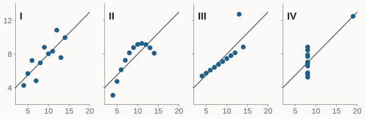
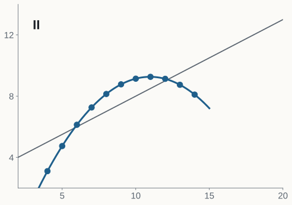
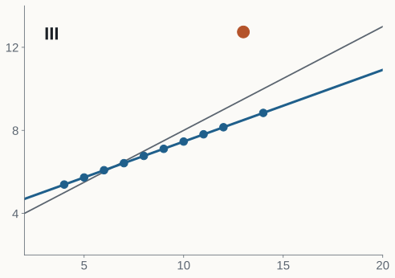
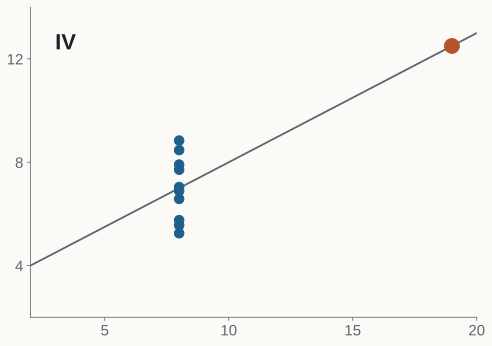

Why you should plot before you summarize: Anscombe's quartet (1973)
kit-presentaciones · sober example · 2026
In all four: mean of x 9, variance of x 11, mean of y 7.50, variance of y 4.12 and fitted line y = 3.00 + 0.500 x.
If we only looked at this table, we would call them the same phenomenon.
Anscombe, F. J. (1973), The American Statistician 27(1), 17–21. Own computation in figuras/hacer_figuras.py.

Anscombe (1973). The four panels share axes; the grey line is the same fit in all of them.

A parabola describes them almost exactly.
A correlation of 0.816 measures how well a line fits, not whether a line is the right model.
Anscombe (1973); own quadratic fit.

Without the highlighted point, the correlation is 1.000 and the line becomes y = 4.01 + 0.345 x.
One outlier is enough to change the slope we report.
Anscombe (1973); fit without the outlier, own computation.

Ten of the eleven points share the same x. The only different one decides the whole line.
Anscombe (1973).
Anscombe (1973); Wickham & Stryjewski, "40 years of boxplots" (2011).